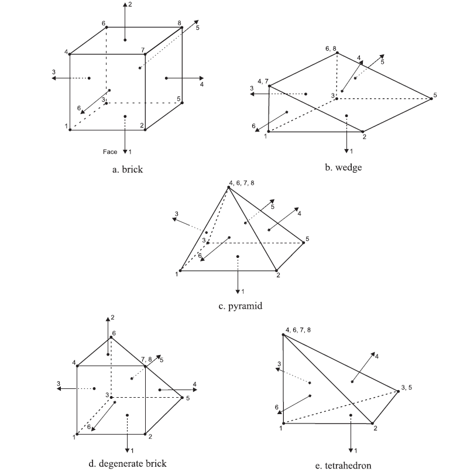
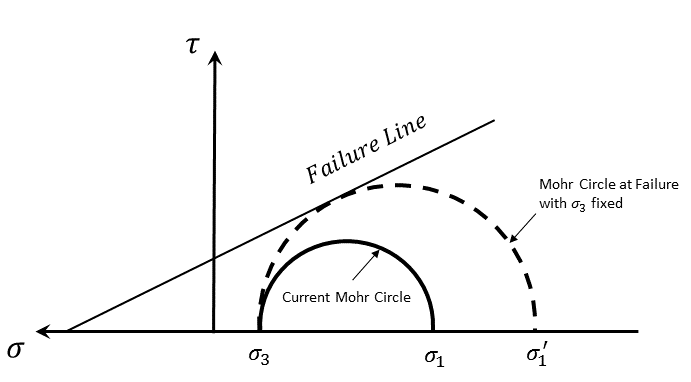

Zone
网格单元内节点与面的方向
网格单元是一个封闭的几何域，其顶点处为节点，各个面构成网格单元的表面。下图给出了基本网格单元类型——六面体、楔形体、锥体、退化六面体和四面体——中节点与面的相对方向（完整列表见 zone create）。每个面都有顶点，这些顶点也在图中标出。若干 FLAC3D 和 FISH 命令（例如 zone attach）都引用此方向。

图 1：网格单元几何。
网格单元的条件数度量
网格单元的条件数是衡量网格单元变形严重程度的度量。其中包含三项度量，条件数取这三者的最小值，以表征最不利情况。网格单元条件数的范围为 0 到 1。该数值越大，网格单元的几何形状越好。
第一项度量是给定网格单元内各个内部四面体棱边之间的最小长宽比。对于所有网格单元类型，均假定理想形状为所有棱边等长，并且棱边之间的夹角为：六面体 90 度，楔形体或退化六面体 60 度和 90 度，锥体或四面体 60 度，因此六面体的面为正方形，楔形体的面为 3 个正方形和 2 个等边三角形，锥体的面为 1 个正方形和 4 个等边三角形，四面体的面为 4 个等边三角形。对于理想四面体，长宽比为 1。然而，对于构成理想形状网格单元的内部四面体，理想六面体或 dbrick 中内部四面体的最小长宽比为 \(1/ \sqrt 3\)，而理想锥体和楔形体的最小长宽比为 \(1/ \sqrt 2\)。因此需要将结果归一化到 0 至 1 的范围，对六面体和 dbrick 乘以系数 \(\sqrt 3\)，对锥体和楔形体乘以系数 \(\sqrt 2\)。
第二项度量是给定网格单元中体积最小的四面体与“平均”体积四面体之间的体积比。平均体积定义为（网格单元体积）/（内部四面体个数）。对于理想形状的楔形体、四面体、锥体和 dbrick 网格单元类型，该度量给出 1。然而，对于理想六面体，其值为 5/6。因此需要对六面体的结果进行归一化，乘以系数 1.2。
第三项度量是正交性，它反映网格单元各侧面（对每个面而言）相互倾斜的“良好”程度。若该检验返回接近零的值，则意味着该网格单元很可能非常细长或变形严重。对于理想六面体，该最小值为 1，但对于理想形状的其他网格单元类型，最小值为 \(\sqrt 2\)。因此对于除六面体以外的网格单元，该项度量必须乘以 \(1/ \sqrt 2\)。
网格单元场数据名称
在 FLAC3D 中，FISH 网格单元场数据函数允许用户查询模型变量在空间任意位置处的值。这既包括基于网格单元的信息，也包括基于网格点的信息。本节的 FISH 函数是基于状态的。其中一些函数设定特定的数据类型（以及用于获取该数据的方法和属性），另一些函数则在设定这些值之后获取数据。
默认情况下，查询针对单次调用尽可能快地执行。若需查询大量（数百个或更多）数据点，可以初始化系统以优化多次调用。这样便无需在给定网格单元或网格点中重复计算数据。例如，以下 FISH 片段在空间中单个位置查询基于网格点的 \(x\) 向位移值：
zone.field.name = 'displacement-x'
local result = zone.field.get(vector(3.5,4.3,6.7))
以下 FISH 片段在空间中的一条线上对基于网格单元的水平应力值执行大量查询：
array dataset(100)
zone.field.name = 'stress-xx'
zone.field.method.name = ’poly’ ; 使用多项式拟合外推
zone.field.init
loop ii (1,100)
local xp = 5.0 + float(ii)/10.0
dataset(ii) = zone.field.get(3.5,4.3,xp)
end_loop
zone.field.reset
可用的网格单元场数据名称见下表。请注意，例如这些值与 zone history 下可用的值相同。
网格单元场数据名称
| 名称 | 说明 |
|---|---|
| acceleration | 网格点处的加速度大小（仅当已指定 模型配置动力分析命令（model configure dynamic） 时可用） |
| acceleration-x | 网格点处的 \(x\) 向加速度（仅在已指定 模型配置动力分析命令（model configure dynamic） 时可用） |
| acceleration-y | 网格点处的 \(y\) 向加速度（仅在已指定 模型配置动力分析命令（model configure dynamic） 时可用） |
| acceleration-z | 网格点处的 \(z\) 向加速度（仅在已指定 模型配置动力分析命令（model configure dynamic） 时可用） |
| condition | 衡量网格单元变形严重程度的度量（见上文讨论） |
| density | 网格单元的密度 |
| displacement | 网格点处的位移大小 |
| displacement-x | 网格点处的 \(x\) 向位移 |
| displacement-y | 网格点处的 \(y\) 向位移 |
| displacement-z | 网格点处的 \(z\) 向位移 |
| extra | 附加变量值。所使用的附加变量索引默认为 1，可通过 zone.field.extra 函数更改。默认情况下，该值来自网格点附加变量，但可通过 zone.field.source 函数指定。默认情况下，该值按标量浮点类型处理，但可通过 zone.field.type 函数指定。 |
| factor-of-safety | 网格点的最大稳定安全系数。在 设置安全系数分析参数（model factor-of-safety） 过程中计算，并使用 velocity-limit 关键字。 |
| pore-pressure | 网格单元内的孔隙压力。默认情况下为网格点孔隙压力，但可使用 zone.field.source 函数指定网格单元平均孔隙压力。 |
| property | 网格单元力学本构模型的某项性质。必须使用 zone.field.prop 函数指定性质名称。默认情况下，假定该性质为浮点标量，但可通过 zone.field.type 函数指定。 |
| property-fluid | 网格单元流体本构模型的某项性质。必须使用 zone.field.prop 函数指定性质名称。默认情况下，假定该性质为浮点标量，但可通过 zone.field.type 函数指定。 |
| property-thermal | 网格单元热本构模型的某项性质。必须使用 zone.field.prop 函数指定性质名称。默认情况下，假定该性质为浮点标量，但可通过 zone.field.type 函数指定。 |
| ratio-local | 每个网格点处的局部不平衡力比。与所有结果一样，可使用 zone.field.log 函数将其改为该值的对数。 |
| saturation | 网格点处的饱和度（仅在已指定 配置流体计算模式（model configure fluid） 时可用） |
| strain-increment | 由当前位移场确定的网格单元应变增量张量。使用 zone.field.quantity 函数指定要从该张量中提取的标量值。 |
| strain-rate | 由当前速度场确定的网格单元速率增量张量。使用 zone.field.quantity 函数指定要从该张量中提取的标量值。 |
| 应力 | 由子网格应力加权平均确定的网格单元应力张量。使用 zone.field.quantity 函数指定要从该张量中提取的标量值。 |
| stress-effective | 由子网格应力加权平均减去网格单元平均孔隙压力确定的网格单元有效应力张量。使用 zone.field.quantity 函数指定要从该张量中提取的标量值。 |
| strength-stress-ratio | 网格单元的强度-应力比（strength-stress ratio）。并非所有本构模型都支持该计算。若不支持，返回值为 10。返回值通常上限为 10。 |
| temperature | 网格点处的温度。可使用 zone.field.source 函数指定改用基于网格单元的温度。 |
| timestep-dynamic | 该特定网格点的局部临界动力时步（仅在已指定 模型配置动力分析命令（model configure dynamic） 时可用） |
| unbalanced-force | 网格点处的不平衡力量值 |
| unbalanced-force-x | 网格点处的 \(x\) 向不平衡力 |
| unbalanced-force-y | 网格点处的 \(y\) 向不平衡力 |
| unbalanced-force-z | 网格点处的 \(z\) 向不平衡力 |
| velocity | 网格点处的速度大小 |
| velocity-x | 网格点处的 \(x\) 向速度 |
| velocity-y | 网格点处的 \(y\) 向速度 |
| velocity-z | 网格点处的 \(z\) 向速度 |
网格单元场量名称
上述场数据名称可能返回多种不同的量。可选值列于下表。 张量（应力、应变增量或应变速率）场数据的定义见 应力/应变不变量（Stress/Strain Invariants）。
| 量名 | 说明 |
|---|---|
| 中间（intermediate） | 中间主应力或主应变（增量/速率） |
| 最大值（maximum） | 主应力或主应变（增量/速率）的最大值（最正） |
| mean | 平均值，定义为张量的迹除以三 |
| 最小值（minimum） | 主应力或主应变（增量/速率）的最小值（最负） |
| 范数（norm） | 应力或应变（增量/速率）的范数 |
| octohedral | 八面体应力或应变（增量/速率） |
| 剪切最大值（shear-maximum） | 最大剪应力或剪应变（增量/速率） |
| 总度量（total-measure） | 主空间中从原点到张量点的距离 |
| 体积（volumetric） | 应力或应变（增量/速率）的迹 |
| von-mises | 应力或应变（增量/速率）的 von Mises 度量 |
| xx | 应力或应变（增量/速率）的 \(xx\) 分量 |
| xy | 应力或应变（增量/速率）的 \(xy\) 分量 |
| xz | 应力或应变（增量/速率）的 \(xz\) 分量 |
| yy | 应力或应变（增量/速率）的 \(yy\) 分量 |
| yz | 应力或应变（增量/速率）的 \(yz\) 分量 |
| zz | 应力或应变（增量/速率）的 \(zz\) 分量 |
下面是一个简单示例：
zone.field.name = 'stress-xx'
zone.field.method.name = 'poly' ; 使用多项式拟合外推
global value1 = zone.field.get(10,0,-20) ; 返回 stress-xx
zone.field.quantity = 'von-mises' ; 将应力量重置为 'von-mises'
global value2 = zone.field.get(10,0,-20) ; 返回 stress-von-mises
或
zone.field.name = 'stress-xx'
zone.field.method.name = 'poly' ; 使用多项式拟合外推
global value1 = zone.field.get(10,0,-20) ; 返回 stress-xx
zone.field.name = 'stress-von-mises' ; 直接将字段名称重置为 'stress-von-mises'
global value2 = zone.field.get(10,0,-20) ; 返回 stress-von-mises
强度-应力比
某些本构模型中会计算强度-应力比（SSR），作为当前应力状态接近破坏程度的局部指标。假设当前有效最小主应力和最大主应力分别为 \(\sigma_1\) 和 \(\sigma_3\)。当前莫尔圆绘于图 2（Figure 2）中。保持 \(\sigma_3\) 不变，扩大莫尔圆使其与剪切破坏线相切；新的最小有效主应力记为 \(\sigma^{\prime}_1\)，强度-应力比定义为
显而易见，若应力状态处于剪切破坏，则 SSR = 1。FLAC3D 中 SSR 的上限设为 10。若当前应力状态处于拉伸破坏，则 SSR 设为 0。若本构模型中定义了 SSR，则可将其绘制为网格单元云图值。


图 2：强度-应力比示意图。
| 这些内容对您有帮助吗？… | FLAC3D © 2019, Itasca | 原文更新于 2020 年 10 月 8 日 |